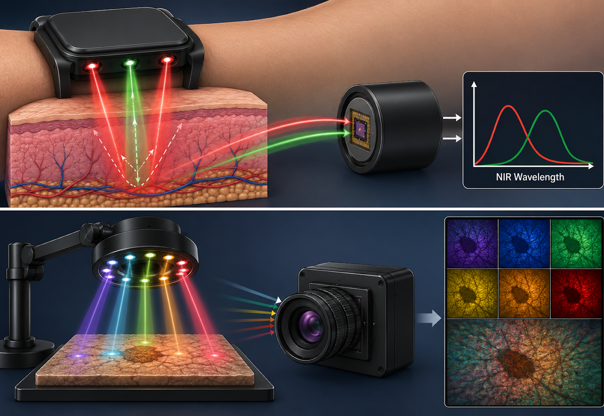
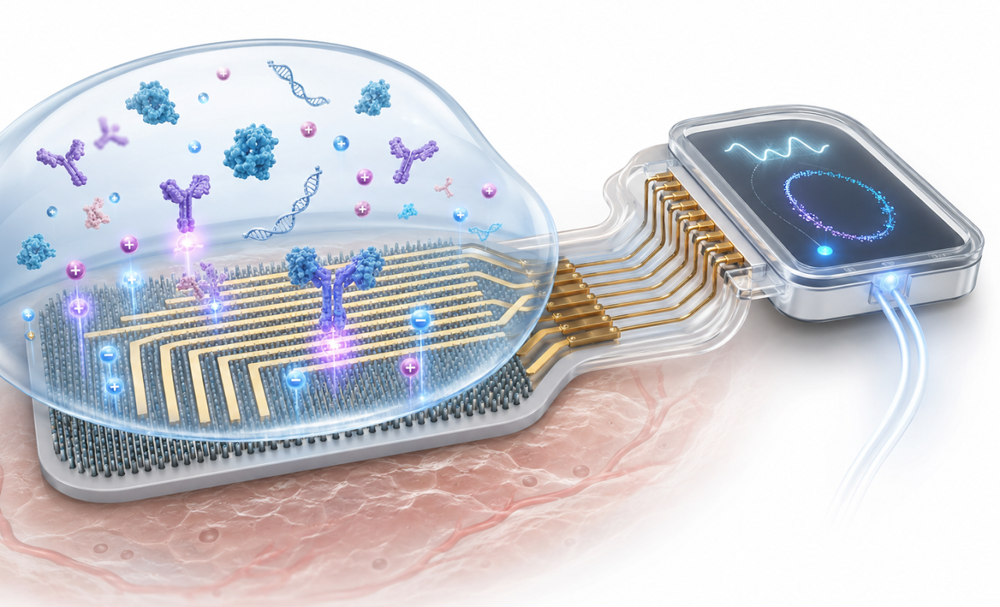
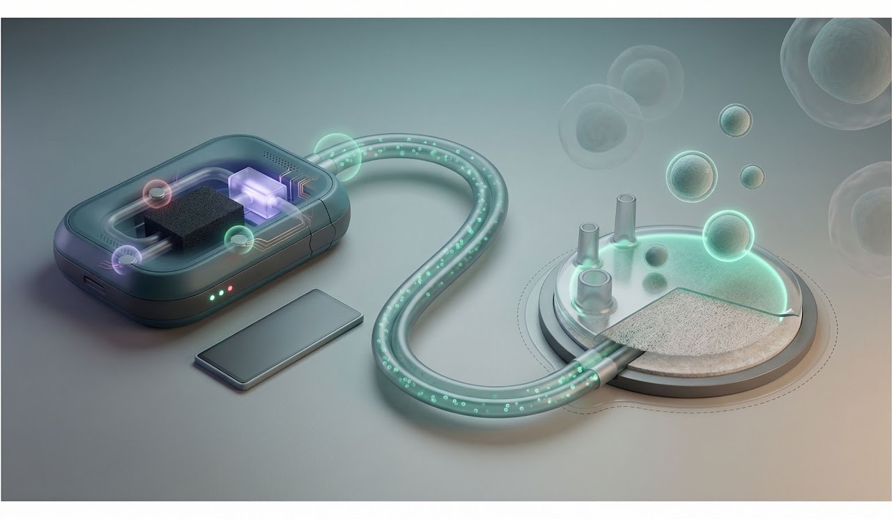
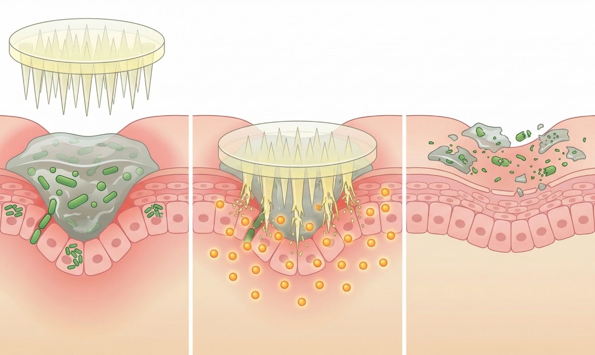
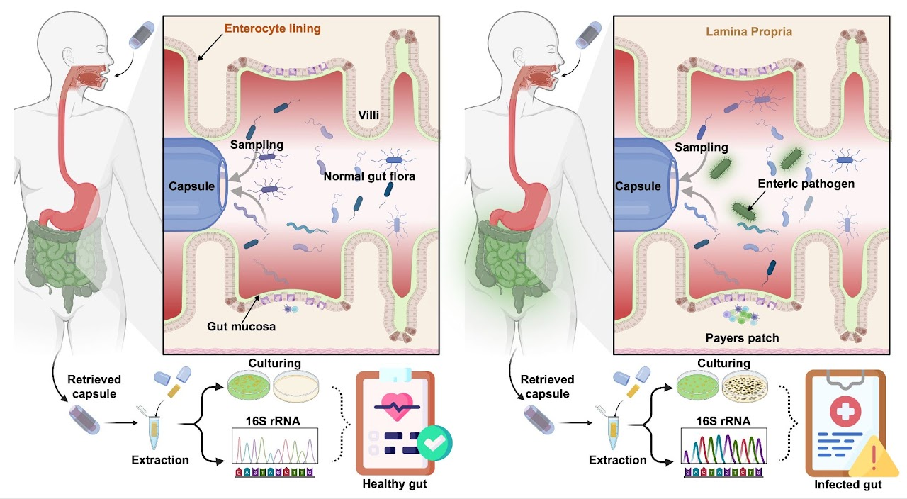
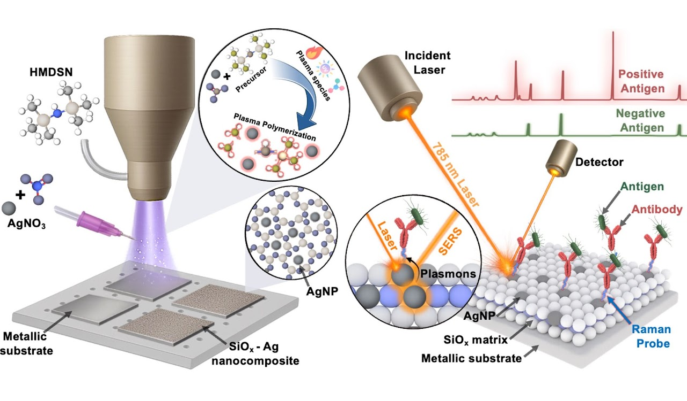
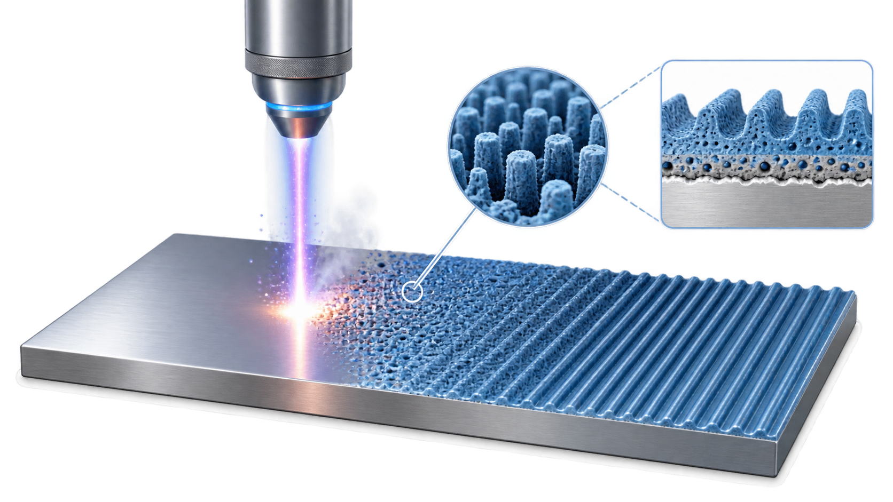
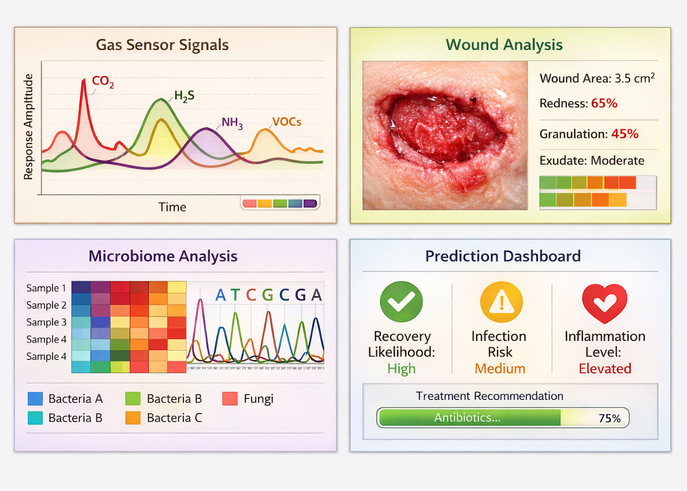
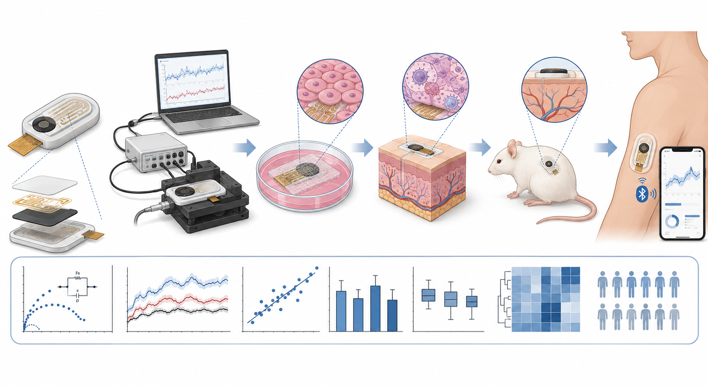

01 · OPTICAL
Optical & Multispectral Sensing
Visible/NIR illumination, photodetection, multispectral sensing and biomedical imaging.
VIS/NIR
Photodetectors
Imaging
VIEW RESEARCH →
Engineer and translational researcher developing optical and electrochemical sensing, bioelectronics, functional materials, and smart therapeutic technologies for clinically relevant biomedical systems.
My research integrates electrical engineering, biomedical sensing, materials science, device fabrication, and biological validation to develop technologies that move from fundamental sensor concepts toward real-world biomedical use.
I am particularly interested in technologies for infection monitoring, wound care, gastrointestinal health, quantitative biosensing, and responsive therapeutic systems.
Research spanning sensing, bioelectronics, therapeutic platforms, gastrointestinal systems, materials, surface processing, computational analysis, and translational validation.

Visible/NIR illumination, photodetection, multispectral sensing and biomedical imaging.

Electrode engineering, impedance analysis and quantitative sensing in complex biological systems.

Wearable and closed-loop systems for infection monitoring and localized antimicrobial therapy.

Minimally invasive and tissue-facing systems for sensing and localized therapeutic delivery.

Miniaturized sensing and sampling platforms for GI health, inflammation and microbiome studies.

Functional nanomaterials and material systems for sensing, antimicrobial and biomedical applications.

Laser processing, plasma treatment, surface modification and functional coatings.

Multivariate analysis and predictive models connecting sensor measurements to quantitative decisions.

Structured device evaluation from engineering characterization through biological and clinically relevant validation.
Published work across biomedical sensing, therapeutics, functional materials, bioelectronics, ingestible technologies and surface engineering.
Collaborative research connecting academic engineering with pharmaceutical, biomedical, wound-care and distributed sensing applications.
Materials, pharmaceutical technology and translational engineering research.
Collaborative pharmaceutical-material and engineering development.
Biomedical and wound-related technology development and translation.
Distributed sensing and applied environmental technology development.
Research communication, student leadership, mentoring, technology showcases and STEM engagement are an important part of my broader engineering work.
Student leadership, research-community engagement and representation within Purdue's nanotechnology ecosystem.
Mentoring students through STEM and research experiences, hands-on experimental training and technical guidance.
Communicating biomedical and wearable technology to broad public and technology audiences.
Oral presentations, posters and interdisciplinary engagement across biomedical and materials research communities.
Making biomedical engineering and scientific research accessible through demonstrations and research exposure.
Your outreach photographs will be added here when you upload them.
Interested in research, technology development, collaboration or biomedical-device opportunities?